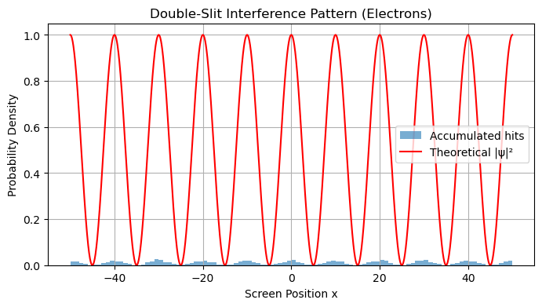

B8.6 The Double-Slit Experiment#
B8.6.1 Motivation: Why Study the Double-Slit Experiment?#
The Ultimate Quantum Experiment#
If you want to see all of quantum mechanics in a single experiment, this is it.
The double-slit experiment shows:
Wave–particle duality: Particles act like waves when unobserved, creating interference patterns.
Probability & \(|\psi|^2\): The pattern builds up over time exactly as predicted by the probability distribution.
Measurement & Collapse: Trying to detect which slit the particle passes through destroys the interference.
A Direct Test of the Wavefunction#
Everything we’ve learned so far comes together here:
The wavefunction passes through both slits simultaneously (superposition).
Probabilities are given by adding amplitudes, not classical probabilities.
The uncertainty principle explains why gaining which-path information blurs the pattern.
The double-slit experiment is not just theory — it has been done with photons, electrons, neutrons, atoms, and even large molecules.
Why It Matters#
It challenges our intuition about reality: how can a single particle interfere with itself?
It shows why we need a completely new way of thinking about nature.
It sets the stage for everything we’ll do next, including bound states, tunneling, and solving the Schrödinger equation.
Why Now?#
We have just learned:
de Broglie matter waves
Wave packets & Fourier analysis
Uncertainty principle
Quantum probability and measurement
The double-slit experiment is the perfect capstone for Phase B because it demonstrates all of these concepts working together in one elegant, unforgettable experiment.
B8.6.2 Classic Wave Interference Review#
For light or water waves through two slits:
Waves from both slits overlap.
Constructive interference: peaks add → bright fringes.
Destructive interference: peaks cancel → dark fringes.
The fringe spacing (for light) is:
\(\lambda\) = wavelength
\(d\) = slit separation
\(L\) = distance to screen
We’ll see the same formula applies to electrons!
B8.6.3 Quantum Twist: Particles Act Like Waves#
The double-slit experiment reveals that particles such as electrons behave like waves.
When fired one at a time:
Each particle hits the screen at a single localized point (particle-like behavior).
Over time, the accumulated hits form an interference pattern (wave-like behavior).
This is one of the most striking pieces of evidence for the wave–particle duality of matter.
Classical vs Quantum Probability#
Classical (Particles or Bullets)#
If particles went through one slit or the other independently:
The pattern would just be two overlapping single-slit distributions → no interference fringes.
Quantum (Probability Amplitudes)#
Quantum mechanics adds probability amplitudes (wavefunctions) first:
Then the probability is:
The last term is the interference term:
\(2\,\text{Re}(\psi_1^*\psi_2) > 0\) → constructive interference (bright fringes).
\(2\,\text{Re}(\psi_1^*\psi_2) < 0\) → destructive interference (dark fringes).
Non-interference terms:
These are just the individual single-slit diffraction patterns.
B8.6.4 Which-Path Information Destroys Interference#
One of the strangest quantum facts:
If you try to find out which slit the particle went through, the interference pattern disappears.
But why? Let’s break it down.
Superposition vs Measurement#
When no measurement is made:
The particle is in a superposition of “through slit 1” and “through slit 2”:
Probabilities come from interference between these two amplitudes.
When you measure which slit the particle passed:
The wavefunction collapses into either \(\psi_1\) or \(\psi_2\).
The interference term disappears:
→ You just see the classical two single-slit diffraction patterns.
Thus, information about the path destroys the superposition.
Why Does Measurement Destroy the Pattern? (Uncertainty Principle)#
To know which slit the particle took, you need to localize it to within the slit separation \(d\):
But Heisenberg’s uncertainty principle says:
This extra momentum uncertainty \(\Delta p_x\) blurs the particle’s trajectory enough to wash out the fringes.
Quick Estimate#
Fringe spacing on the screen:
Interference disappears if the momentum uncertainty \(\Delta p_x\) is comparable to the momentum difference between adjacent fringes:
which is exactly what the uncertainty principle predicts.
Thus, trying to measure the path changes the momentum and destroys the interference.
Physical Intuition#
It’s not just the physical disturbance of the particle — even the potential to know the path collapses the superposition.
In modern quantum mechanics, this is explained by entanglement with the measuring device: once the path is recorded anywhere in the universe, the interference vanishes.
B8.6.5 Classical vs Quantum Behavior in the Double-Slit#
A common question: When do we see quantum interference, and when does the experiment behave classically?
The key lies in comparing the momentum uncertainty introduced by localizing the particle at the slits to the momentum spacing between interference fringes.
1. Relevant Quantities#
Transverse momentum uncertainty (Heisenberg):
where \(\Delta x\) is how well we confine (or localize) the particle at the slit.
Momentum spacing between fringes:
where \(d\) is the slit separation.
2. Quantum vs Classical Regimes#
Regime |
Condition |
Outcome |
|---|---|---|
Quantum (Interference Visible) |
\(\Delta p_x \ll \Delta p_{\text{fringe}}\) |
The phase relationship between the two paths remains coherent → clear interference fringes |
Classical (No Interference) |
\(\Delta p_x \gtrsim \Delta p_{\text{fringe}}\) |
Localizing the particle introduces enough momentum spread to randomize phase → just two single-slit diffraction envelopes |
3. Role of the Actual (Mean) Momentum#
The electron’s average forward momentum \(p = \hbar k\) is usually much larger than \(\Delta p_x\) in either case.
The distinction between quantum and classical behavior is not about how “fast” the particle moves but whether the relative phase between the two paths can remain well-defined.
4. Intuition#
Poor localization (large \(\Delta x\)): Small \(\Delta p_x\) → the particle is “smeared out” enough to explore both slits at once → quantum interference.
Good localization (small \(\Delta x\)): Large \(\Delta p_x\) → we effectively gain which-path information → classical behavior.
B8.6.6 Visualization: Building the Pattern#
Below we simulate points on a screen gradually forming an interference pattern, assuming a simple \(|\psi|^2\) from two slits.

B8.6.7 Key Takeaways#
Particles arrive one at a time but form a wave-like pattern over time.
\(|\psi|^2\) predicts the probability distribution of hits.
Any attempt to determine the particle’s path removes the interference (collapse).
The uncertainty principle explains why path detection blurs the pattern.